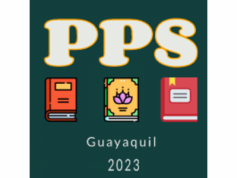
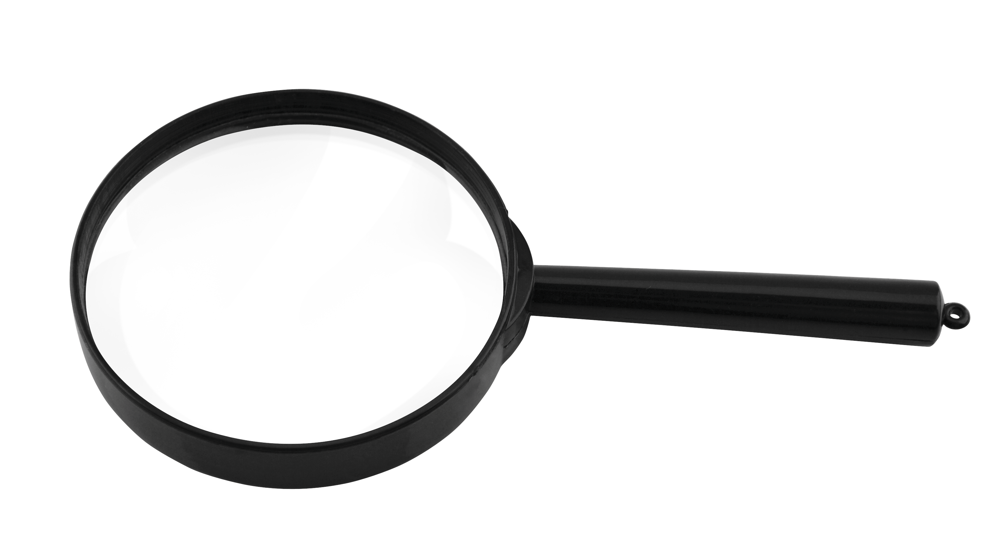
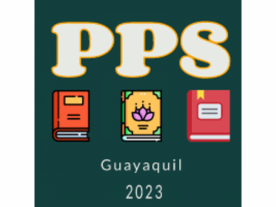
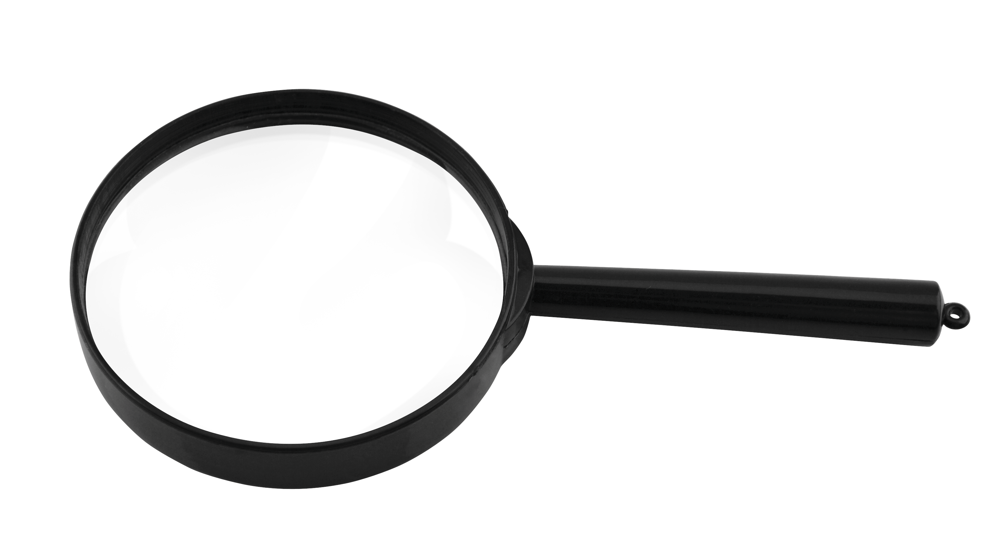

¿What is PPS?
PPS (Peñafiel Professional Services) is a website run by his only one owner,
Johnny Peñafiel Mera. An economist, graduated from Universidad Técnica de Machala,
in 2020.
He has gotten some prizes because of being an outstanding student.
His B1 certificate has allowed him to get five years of experience teaching English
to young from 11 to 20 years old in some schools.
In this days he is studying the
Software Development bachelor degree at Brigham Young University, Idaho, which make
a wider range of services to Ecuadorian communities.
 


